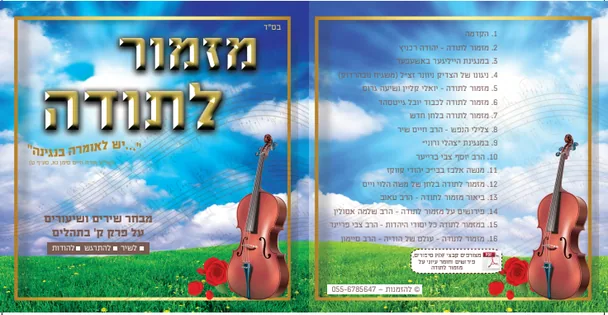

טעמים נפלאים בהלכות קרבן תודה. .
מה עומד מאחורי ההלכות של קרבן תודה?
מדוע לא מספיק להודות, למה צריך קרבן?
מי חייב בקרבן תודה?
האם קרבן תודה רשות או חובה?
מדוע יש הבדלים בין קרבן תודה לקבן שלמים?
מחיר החוברת + מתנה + משלוח עד הבית = 20 ש"ח
לא לשכוח למלא כתובת להיכן לשלוח לכם את החוברת!

כל הקונה את החוברת נר למאה מקבל
מתנה נפלאה - דיסק שירי מזמור לתודה
הדיסק מחולק ל 3 חלקים
א. למעלה מעשרה ניגונים על מזמור לתודה (חסידי, ספרדי, ליטאי, סוער, רגוע ועוד).
ב. שיעורים נפלאים לבאר את המזמור.
ג. קבצי PDF סיפורים נפלאים שקראו בעקבות שירת מזמור לתודה (ומעלת המזמור ועוד).
מחיר החוברת + מתנה + משלוח עד הבית = 20 ש"ח
לא לשכוח למלא כתובת להיכן לשלוח לכם את החוברת!